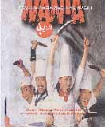

|
‘난타' 52억원에 미국 수출
|
 |
‘난타’가 마침내 뮤지컬의 본고장
미국으로 4백만달러에 수출된다. 이는 문화상품 수출사상 최고액으로 기록될 액수.
‘난타’의 제작사인 (주)PMC(공동대표
송승환·이광호)는 최소 개런티 4백만달러에 ‘리처드 프랭클린 프로덕션’과 계약을 맺었다고 4일 밝혔다. ‘난타’는 오는 9월 보스턴을 시작으로
40주 동안 미국 전역을 돈다.
이번 순회투어는 단순히 문화상품의 수출을 의미할 뿐만 아니라 오락무대의 본고장인 미국시장에서
우리 문화상품이 그들의 기대를 충족시켜줄 것인지를 가늠하는 중요한 무대가 될 것으로 보인다.
|
|
| |